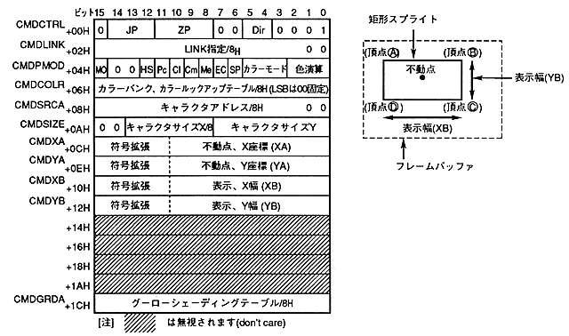

The contents of the fixed point specification command table are as follows.

The fixed point specification of the rectangle sprite drawing command is defined as follows
- If the end bit is set to 0B and the command selection bit is set to 0001B, it becomes a rectangular sprite drawing command.
- Specify the jump format. When the jump format is assign or call, divide the address of the command table to be processed next by 8H and set to CMDLINK.
- Set the zoom point. If the zoom point (fixed point) is set to a value other than 0000B, the fixed point is specified. When 0000B is set, two coordinate points are specified.
- For details on the zoom point, see " Zoom Point " in " Chapter 6 Command Table ".
- Set the character pattern reading direction. You can draw by flipping upside down or left and right by specifying the reading direction.
- Set high speed shrink. Specify accuracy priority or speed priority.
- Set pre-clipping. Specify valid or invalid considering the clipping area and drawing position of the part.